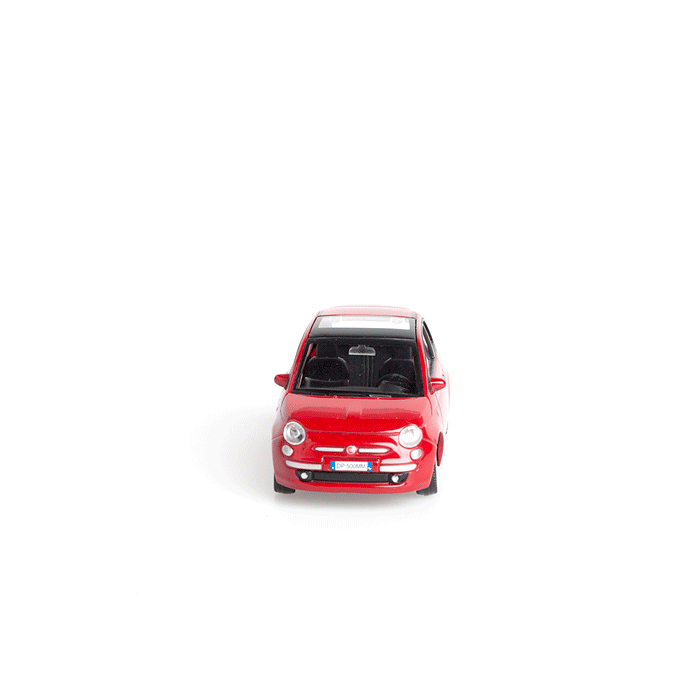

Today, the car can be a tool to not just get off the map but to also get off the digital grid. Cars can provide agile forms of digital camouflage and digital deceptions.
Stealth Mode - a simple roof mounted “deflective screen” can be installed in any car, for example new Jeep Renegade, car with getting of the road heritage for digital generation. With push of the button, screen starts emitting “deceptive signals” allowing your presence to be digitally camouflaged, and CCTV camera sees a cloud of white XXXXXX's.